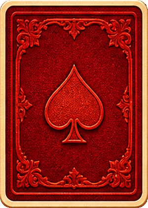
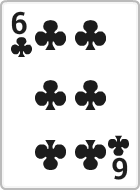
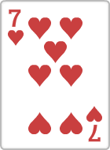

Layout preview of the SETTINGS fix at iPhone landscape size. SETTINGS stays on the top chip row and sits above the hand window. Full game: GitHub Pages branch preview in the PR. Layout-only: https://simmo76.github.io/red-dead-texas-holdem/topbar-preview/